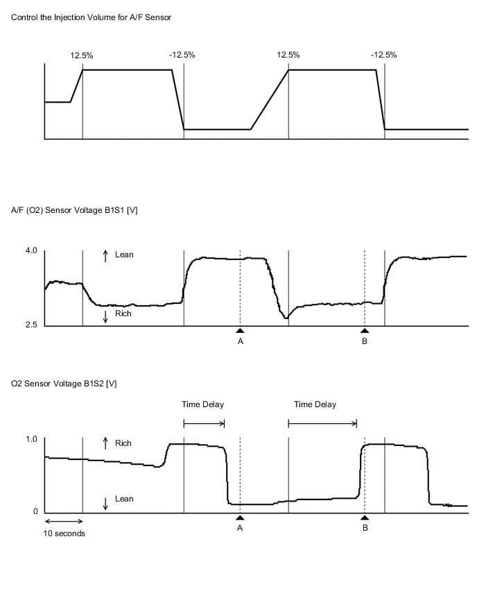
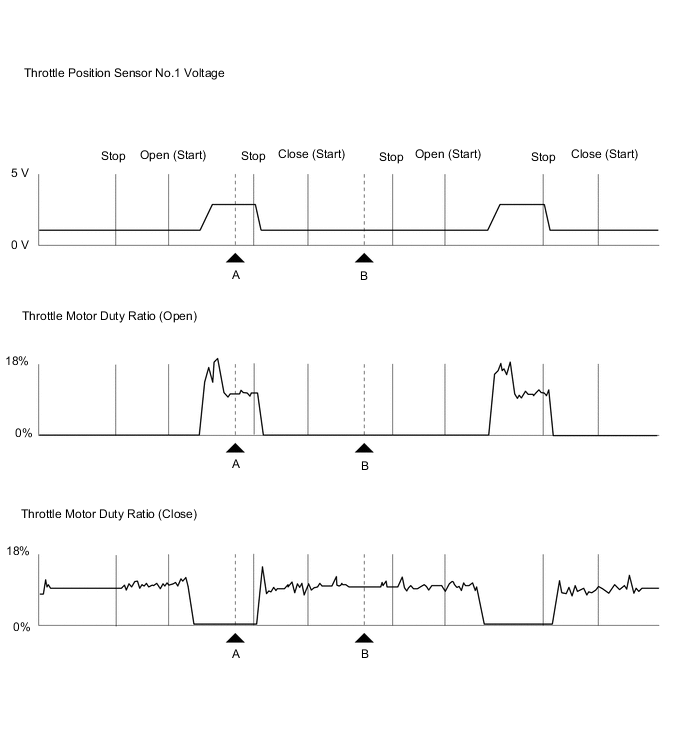
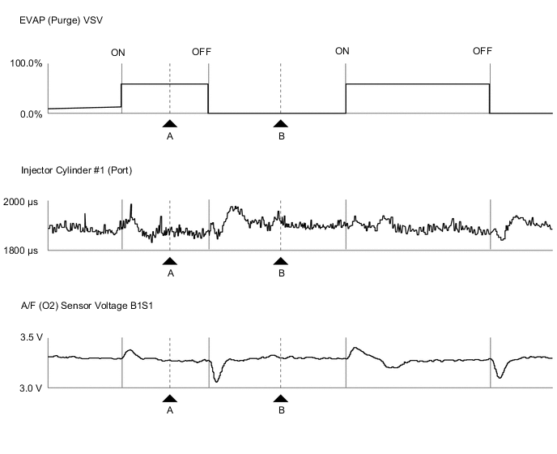
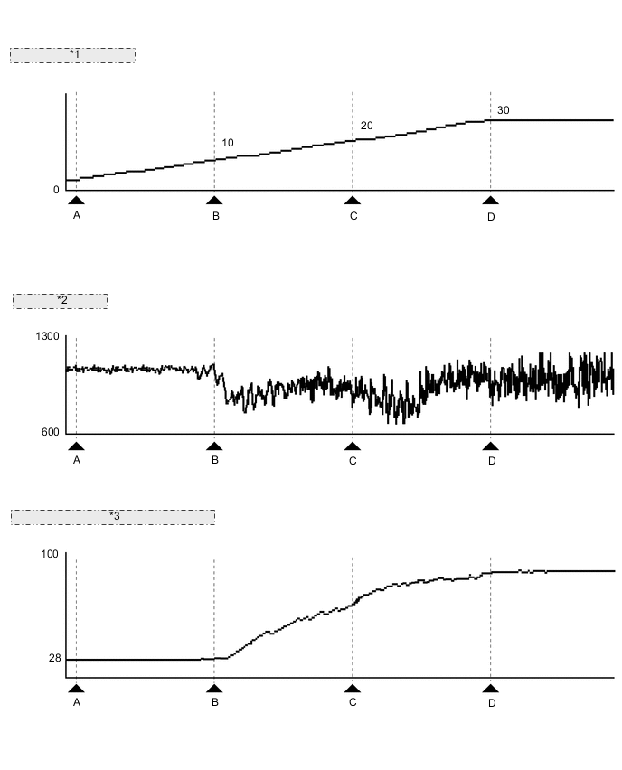
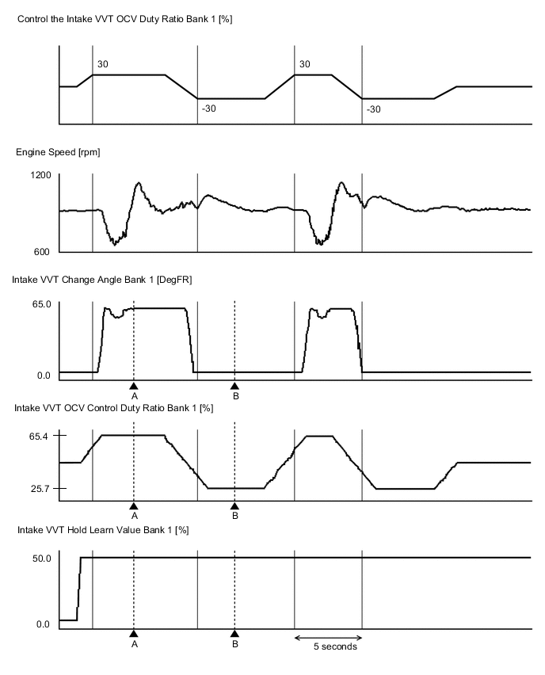

DATA LIST
Tech Tips
Using the GTS to read the Data List allows the values or states of switches, sensors, actuators and other items to be read without removing any parts. This non-intrusive inspection can be very useful because intermittent conditions or signals may be discovered before parts or wiring is disturbed. Reading the Data List information early in troubleshooting is one way to save diagnostic time.
Note
In the table below, the values listed under "Normal Condition" are reference values. Do not depend solely on these reference values when deciding whether a part is faulty or not.
Connect the GTS to the DLC3.
Turn the power switch on (IG).
Turn the GTS on.
Put the engine in Inspection Mode (Maintenance Mode).
| Tester Display |
|---|
| Inspection Mode |
Start the engine.
Warm up the engine.
Turn the A/C switch off.
Turn the power switch off.
Turn the power switch on (IG).
Turn the GTS on.
Enter the following menus: Powertrain / Engine / Data List.
Tech Tips
To display the list box, press the pull down menu button next to Primary. Then select a measurement group.
When you select a measurement group, the ECU data belonging to that group is displayed.
Measurement Group List / Description
All Data / All data
Primary / -
Engine Control / Engine control system related data
Ptrl General / -
Ptrl AF Control / Air fuel ratio control system related data
Ptrl AF O2 Sensor / Air fuel ratio sensor and heated oxygen sensor related data
Ptrl Throttle / Gasoline throttle system related data
Ptrl Intake Control / Intake control system related data
Ptrl Valve Control / Valve control system related data
Ptrl Misfire / "Misfire" related data
Ptrl Starting / "Difficult to start" related data
Ptrl Rough Idle / "Rough idle" related data
Ptrl Evaporative / Evaporative system related data
Ptrl CAT Converter / Catalyst converter related data
Check Mode / Check mode related data
Monitor Status / Monitor status related data
Ignition / Ignition system related data
Charging Control / Charging control system related data
Compression / Data used during "Check the Cylinder Compression" Active Test
AT / Automatic transaxle system related data
Vehicle Information / Vehicle information
Read the Data List according to the display on the GTS.
Tech Tips
The title used for each group of Data List items in this repair manual does not appear on the GTS. However, the name in parentheses after the title, which is a Measurement Group, does appear on the GTS. When the name shown in parentheses is selected on the GTS, all of the Data List items listed for that group will be displayed.
Various Vehicle Conditions 1 (All Data)
| Tester Display | Measurement Item | Range | Normal Condition | Diagnostic Note |
|---|---|---|---|---|
| Total Distance Traveled | Total distance traveled | Min.: 0, Max.: 16777215 | - | - |
| Total Distance Traveled - Unit | Total Distance Traveled unit | km or mile | - | - |
| Vehicle Speed | Vehicle speed | Min.: 0 km/h (0 mph), Max.: 255 km/h (158 mph) | Actual vehicle speed | This is the current vehicle speed. |
| Engine Speed | Engine speed | Min.: 0 rpm, Max.: 16383 rpm | 950 to 1050 rpm: Idling with warmed up engine (inspection mode [maintenance mode], not charge control, park (P) selected) | When the crankshaft position sensor is malfunctioning, "Engine Speed" is approximately 0 rpm or varies greatly from the actual engine speed. |
| Calculate Load | Load calculated by ECM | Min.: 0%, Max.: 100% |
|
|
| Vehicle Load | Vehicle load | Min.: 0%, Max.: 25700% | Actual vehicle load |
Tech Tips Due to individual engine differences, intake air temperature, etc., the value may exceed 100%. Intake airflow (g/rev.) = Intake airflow (gm/sec) x 60 / Engine speed (rpm) (Intake airflow (gm/sec) is value of Mass Air Flow Sensor) |
| Mass Air Flow Sensor | Airflow rate from mass air flow meter sub-assembly | Min.: 0 gm/sec, Max.: 655.35 gm/sec |
|
This is the intake air amount measured by the mass air flow meter sub-assembly. |
| Atmospheric Pressure | Atmospheric pressure | Min.: 0 kPa (0 psi), Max.: 255 kPa (37 psi) | Equivalent to atmospheric pressure |
|
| Intake Manifold Absolute Pressure | Intake manifold absolute pressure | Min.: 0 kPa (0 psi), Max.: 2047.96 kPa (296.95 psi) |
|
Tech Tips When the power switch is on (IG), the manifold absolute pressure and atmospheric pressure are approximately the same (standard atmospheric pressure = 101 kPa(abs) [15 psi(abs)]). |
| Intake Manifold Absolute Pressure Supported | Intake Manifold Absolute Pressure supported | Unsupp or Supp | Supp | - |
| Coolant Temperature | Engine coolant temperature | Min.: -40°C (-40°F), Max.: 140°C (284°F) | 75 to 100°C (167 to 212°F): After warming up | This is the engine coolant temperature. Tech Tips
|
| Intake Air Temperature | Intake air temperature | Min.: -40°C (-40°F), Max.: 140°C (284°F) | Equivalent to temperature at location of mass air flow meter sub-assembly | This is the engine intake air temperature. Tech Tips
|
| Ambient Temperature | Ambient temperature | Min.: -40°C (-40°F), Max.: 215°C (419°F) | Actual ambient temperature | This is the ambient temperature. Tech Tips If the vehicle has been left as is for a long time after the power switch was turned off, coolant temperature, intake air temperature and ambient temperature will be almost the same. |
| Engine Run Time | Engine run time | Min.: 0 sec, Max.: 65535 sec | Time after engine start |
|
| Heater Coolant Temperature Sensor | Engine coolant temperature | Min.: -40°C (-40°F), Max.: 215°C (419°F) | 75 to 100°C (167 to 212°F): After warming up | This is the engine coolant temperature. Tech Tips
|
| IG-ON Coolant Temperature | Engine coolant temperature when the power switch is turned on (IG) | Min.: -40°C (-40°F), Max.: 119.3°C (246.7°F) | - | This is the engine coolant temperature stored when the power switch is turned on (IG). |
| Initial Engine Coolant Temperature | Engine coolant temperature when the power switch is turned on (READY) | Min.: -40°C (-40°F), Max.: 119.3°C (246.7°F) | - | This is the engine coolant temperature stored when the power switch is turned on (READY). |
| IG-ON Intake Air Temperature | Intake air temperature when the power switch is turned on (IG) | Min.: -40°C (-40°F), Max.: 119.3°C (246.7°F) | - | This is the intake air temperature stored when the power switch is turned on (IG). |
| Initial Engine Intake Air Temperature | Intake air temperature when the power switch is turned on (READY) | Min.: -40°C (-40°F), Max.: 119.3°C (246.7°F) | - | This is the intake air temperature stored when the power switch is turned on (READY). |
| Battery Voltage | Auxiliary battery voltage | Min.: 0 V, Max.: 65.5 V | 11 to 16 V: Power switch on (IG) | If 11 V or less, characteristics of some electrical components may change. |
| BATT Voltage | Auxiliary battery voltage | Min.: 0 V, Max.: 79.998 V | 11 to 16 V: Power switch on (IG) | If 11 V or less, characteristics of some electrical components may change. |
Throttle Control (All Data)
| Tester Display | Measurement Item | Range | Normal Condition | Diagnostic Note |
|---|---|---|---|---|
| Throttle Position Sensor No.1 Voltage % | Absolute No. 1 throttle position sensor | Min.: 0%, Max.: 100% | 10 to 22%: Power switch on (IG), accelerator pedal fully released | The No. 1 throttle position sensor output is converted using 5 V = 100%. Tech Tips If there are no throttle position sensor DTCs stored, it is possible to conclude that the throttle position sensor system is normal. |
| Throttle Position Sensor No.2 Voltage % | Absolute No. 2 throttle position sensor | Min.: 0%, Max.: 100% | 42 to 62%: Power switch on (IG), accelerator pedal fully released | The No. 2 throttle position sensor output is converted using 5 V = 100%. |
| System Guard | System guard | ON or OFF | ON: Idling or throttle actuator operating |
|
| Open Side Malfunction | Open malfunction | ON or OFF | OFF | This item indicates a malfunction in the electronic throttle when the throttle valve is open. |
| Throttle Request Position | Required throttle position | Min.: 0 V, Max.: 4.98 V | 0.6 to 1.1 V: Idling with warmed up engine (inspection mode [maintenance mode]), park (P) selected | The value of this item is calculated by the ECM and shows the voltage for the target throttle valve position. |
| Throttle Sensor Position | Throttle sensor position | Min.: 0%, Max.: 100% | - | - |
| Throttle Position Sensor No.1 Voltage | No. 1 throttle position sensor output voltage | Min.: 0 V, Max.: 4.98 V |
|
This is the No. 1 throttle position sensor output voltage. |
| Throttle Position Sensor No.2 Voltage | No. 2 throttle position sensor output voltage | Min.: 0 V, Max.: 4.98 V |
|
This is the No. 2 throttle position sensor output voltage. |
| Throttle Position Command | Throttle position command value | Min.: 0 V, Max.: 4.98 V | 0.6 to 1.1 V: Idling with warmed up engine (inspection mode [maintenance mode]), park (P) selected | The value displayed for this item is the same as Throttle Request Position. |
| Throttle Position Sensor Open Position No.1 | No. 1 throttle position sensor | Min.: 0 V, Max.: 4.98 V | 0.6 to 1.4 V | This is the No. 1 throttle position sensor output voltage when there is no current supplied to the electronic throttle actuator. If the accelerator pedal is released, the throttle valve is kept open by the throttle valve opener when the power switch is on (IG). |
| Throttle Position Sensor Open Position No.2 | No. 2 throttle position sensor | Min.: 0 V, Max.: 4.98 V | 1.7 to 2.5 V | This is the No. 2 throttle position sensor output voltage when there is no current supplied to the electronic throttle actuator. If the accelerator pedal is released, the throttle valve is kept open by the throttle valve opener when the power switch is on (IG). |
| Throttle Motor Current | Throttle actuator current | Min.: 0 A, Max.: 19.9 A | 0 to 3.0 A: Idling with warmed up engine (inspection mode [maintenance mode]), A/C off and park (P) selected | When the value of this item is large but the actual opening angle (Throttle Position Sensor No.1 Voltage) does not reach the target opening angle (Throttle Request Position), there is an "unable to open" malfunction. |
| Throttle Motor Duty Ratio | Throttle actuator | Min.: 0%, Max.: 100% | 10 to 22%: Idling with warmed up engine (inspection mode [maintenance mode]), A/C off and park (P) selected | This is the output duty ratio of the throttle actuator drive circuit. |
| Throttle Motor Duty Ratio (Open) | Throttle actuator duty ratio (open) | Min.: 0%, Max.: 255% | 0 to 40%: Idling with warmed up engine (inspection mode [maintenance mode]), A/C off and park (P) selected | This is the duty ratio used to drive the throttle actuator and open the throttle valve. It is an ECM command signal. |
| Throttle Motor Duty Ratio (Close) | Throttle actuator duty ratio (close) | Min.: 0%, Max.: 255% | 0 to 40%: Idling with warmed up engine (inspection mode [maintenance mode]), A/C off and park (P) selected | This is the duty ratio used to drive the throttle actuator and close the throttle valve. It is an ECM command signal. Tech Tips During idle, the throttle valve opening angle is usually controlled using a duty ratio drive signal which closes the throttle valve. However, if carbon deposits have built up, it may be necessary to open the throttle valve more than the throttle valve opener does. In that case, the opening angle is controlled using the Throttle Motor Duty Ratio (Open) signal. |
| Throttle Position Sensor Fully Closed Learn Value | Throttle valve fully closed position (learned value) | Min.: 0 V, Max.: 4.98 V | 0.4 to 1.0 V: Power switch on (IG), accelerator pedal fully released |
|
| +BM Voltage | +BM voltage | Min.: 0 V, Max.: 79.998 V | 11 to 16 V: Power switch on (IG) | This is the power supply for the electronic throttle actuator. When the power supply is interrupted for approximately 1 second, DTCs P065714 (open circuit) and P06579E (short circuit, ECU malfunction) are stored and the electronic throttle control system enters fail-safe mode (normal operation is not restored until the power switch is turned off). |
| Actuator Power Supply | Actuator power supply | ON or OFF | ON: Engine running or throttle actuator operating | - |
| Throttle Air Flow Learn Value (Area 1) | Throttle air flow learning value of area 1 | Min.: 0, Max.: 1.99 | - | - |
| Throttle Air Flow Learn Value (Area 2) | Throttle air flow learning value of area 2 | Min.: 0, Max.: 1.99 | - | - |
| Throttle Air Flow Learn Value (Area 3) | Throttle air flow learning value of area 3 | Min.: 0, Max.: 1.99 | - | - |
| Throttle Air Flow Learn Value (Calculated Value) | Throttle air flow learning value (calculated value) | Min.: 0, Max.: 1.99 | - | - |
| Throttle Air Flow Learn Value (Atmosphere Pressure Offset Value) | Throttle air flow learning value (atmosphere pressure offset value) | Min.: 0, Max.: 2.55 | - | - |
Idle Speed Control (Ptrl Rough Idle)
| Tester Display | Measurement Item | Range | Normal Condition | Diagnostic Note |
|---|---|---|---|---|
| Low Revolution Control | Low engine speed control operation state | ON or OFF | OFF | This item indicates whether the engine speed dropped immediately after starting due to poor combustion, etc. |
| Engine Stall Control F/B Flow | ISC torque lower limit value to prevent engine stall | Min.: -1024 Nm, Max.: 1023.96 Nm | - |
|
Fuel System (All Data)
| Tester Display | Measurement Item | Range | Normal Condition | Diagnostic Note |
|---|---|---|---|---|
| Injector Cylinder #1 (Port) | Injection period of the No. 1 cylinder | Min.: 0 μs, Max.: 65535 μs | 1000 to 3000 μs: Idling with warmed up engine (inspection mode [maintenance mode], not charge control) | This is the injection period of the No. 1 cylinder (the command value from the ECM). |
| Injection Volume Cylinder #1 | Injection volume (cylinder 1) | Min.: 0 ml, Max.: 2 ml | 0.03 to 0.13 ml: Idling with warmed up engine (inspection mode [maintenance mode], not charge control) | This is the fuel injection volume for 10 injections. |
| Injection Volume | Fuel injection volume | Min.: -25%, Max.: 24.8% | - | Active Test item [Control the Injection Volume] or [Control the Injection Volume for A/F Sensor] support data. |
| Fuel Pump/Speed Status | Fuel pump status | ON or OFF | ON: Engine running | - |
| Current Fuel Type | Current fuel type | - | Gasoline/petrol | - |
EVAP System (Ptrl Evaporative)
| Tester Display | Measurement Item | Range | Normal Condition | Diagnostic Note |
|---|---|---|---|---|
| EVAP (Purge) VSV | Purge VSV control duty | Min.: 0%, Max.: 100% | 10 to 70%: Idling with warmed up engine (inspection mode [maintenance mode]) |
|
| EVAP Purge Flow | Purge flow | Min.: 0%, Max.: 399.9% | - | This is the percentage of total engine airflow contributed by EVAP purge operation. (Evap Purge Flow = Purge flow / Engine airflow x 100 (%)) |
| EVAP Purge Density Learn Value | Purge density learned value | Min.: -200, Max.: 199.993 | - |
Tech Tips
|
| Fuel Lid SW | Fuel lid courtesy switch status | Open or Close |
|
- |
| EVAP Purge VSV | VSV status for EVAP control | ON or OFF | - | This item is ON when EVAP (Purge) VSV is approximately 30% or higher, and is OFF when the VSV duty ratio is less than 30%. |
| Purge Cut VSV Duty | Purge VSV duty | Min.: 0%, Max.: 399.9% | - | - |
Air Fuel Ratio Control 1 (All Data)
| Tester Display | Measurement Item | Range | Normal Condition | Diagnostic Note |
|---|---|---|---|---|
| Target Air-Fuel Ratio | Target air fuel ratio | Min.: 0, Max.: 2 | 0.8 to 1.2: Idling with warmed up engine (inspection mode [maintenance mode]) |
|
Air Fuel Ratio Control 2 (Ptrl AF O2 Sensor)
| Tester Display | Measurement Item | Range | Normal Condition | Diagnostic Note |
|---|---|---|---|---|
| A/F (O2) Lambda Sensor B1S1 | Output air fuel ratio associated | Min.: 0, Max.: 1.99 |
|
This is the actual air fuel ratio calculated based on the air fuel ratio sensor output. |
| A/F (O2) Sensor Voltage B1S1 | Air fuel ratio sensor output voltage | Min.: 0 V, Max.: 7.99 V | 2.6 to 3.8 V: Idling with warmed up engine (inspection mode [maintenance mode]) |
|
| A/F (O2) Sensor Current B1S1 | Air fuel ratio sensor output current | Min.: -128 mA, Max.: 127.99 mA | -0.5 to 0.5 mA: Idling with warmed up engine (inspection mode [maintenance mode]) |
|
| A/F (O2) Sensor Heater Duty Ratio B1S1 | Air fuel ratio sensor heater duty ratio | Min.: 0%, Max.: 399.9% | 0 to 100% | When the value of this item is more than 0%, current is being supplied to the heater. |
| O2 Sensor Voltage B1S2 | Heated oxygen sensor output voltage | Min.: 0 V, Max.: 1.275 V | 0 to 1.0 V |
|
| O2 Sensor Impedance B1S2 | Heated oxygen sensor impedance | Min.: 0 ohm, Max.: 21247.67 ohm | 5 to 15000 ohm | - |
| O2 Sensor Heater B1S2 | Heated oxygen sensor heater | Active or Not Act | Active: Heater on | - |
| O2 Sensor Heater Current Value B1S2 | Heated oxygen sensor current | Min.: 0 A, Max.: 4.999 A | - | When the value of this item is more than 0 A, current is being supplied to the heater. |
| Short FT B1S1 | Short-term fuel trim | Min.: -100%, Max.: 99.21% | -20 to 20% | This item is the "short-term fuel injection volume compensation ratio" used to maintain the air fuel ratio at the stoichiometric ratio using the air fuel ratio sensor for feedback. |
| Short FT B1S2 | Short-term fuel trim | Min.: -100%, Max.: 99.21% | - | - |
| Long FT B1S1 | Long-term fuel trim | Min.: -100%, Max.: 99.21% | -20 to 20% |
|
| Long FT B1S2 | Long-term fuel trim | Min.: -100%, Max.: 99.21% | - | - |
| Total FT Bank 1 | Total fuel trim | Min.: -0.5, Max.: 0.496 | -0.28 to 0.2: Idling with warmed up engine (inspection mode [maintenance mode]) | Total FT Bank 1 = Short FT B1S1 + Long FT B1S1 |
| Fuel System Status Bank 1 | Fuel system status (bank 1) | Unused, OL, CL, OLDrive, OLFault or CLFault | CL: Idling with warmed up engine (inspection mode [maintenance mode]) |
Tech Tips CL (Closed Loop): During air fuel ratio feedback control, A/F (O2) Lambda Sensor B1S1 is approximately 1.0 and A/F (O2) Sensor Voltage B1S1 is approximately 3.3 V. |
| Fuel System Status Bank 2 | Fuel system status (bank 2) | Unused, OL, CL, OLDrive, OLFault or CLFault | Unused | - |
| A/F Learn Value Idle Bank 1 | Air fuel ratio learn value of idle area | Min.: -50%, Max.: 49.6% | -20 to 20% | Learning is performed when idling with the engine warmed up (engine coolant temperature is 80°C [176°F] or higher). |
| A/F Learn Value Low Bank 1 | Air fuel ratio learn value of low load area | Min.: -50%, Max.: 49.6% | -20 to 20% | Learning is performed when driving with the engine warmed up (engine coolant temperature is 80°C [176°F] or higher) and operating in the low load range (when the range of engine loads is divided into four parts). |
| A/F Learn Value Mid No.1 Bank 1 | Air fuel ratio learn value of middle 1 load area | Min.: -50%, Max.: 49.6% | -20 to 20% | Learning is performed when driving with the engine warmed up (engine coolant temperature is 80°C [176°F] or higher) and operating in the middle load range closer to the low load range (when the range of engine loads is divided into four parts). |
| A/F Learn Value Mid No.2 Bank 1 | Air fuel ratio learn value of middle 2 load area | Min.: -50%, Max.: 49.6% | -20 to 20% | Learning is performed when driving with the engine warmed up (engine coolant temperature is 80°C [176°F] or higher) and operating in the middle load range closer to the high load range (when the range of engine loads is divided into four parts). |
| A/F Learn Value High Bank 1 | Air fuel ratio learn value of high load area | Min.: -50%, Max.: 49.6% | -20 to 20% | Learning is performed when driving with the engine warmed up (engine coolant temperature is 80°C [176°F] or higher) and operating in the high load range (when the range of engine loads is divided into four parts). |
Ignition System (Ignition)
| Tester Display | Measurement Item | Range | Normal Condition | Diagnostic Note |
|---|---|---|---|---|
| Ignition Timing Cylinder #1 | Ignition timing advance for No. 1 cylinder | Min.: -64 deg, Max.: 63.5 deg | 8 to 24 deg: Idling with warmed up engine (inspection mode [maintenance mode], not charge control), park (P) selected | - |
| Knock F/B Value | Knocking feedback value | Min.: -1024 deg(CA), Max.: 1023.9 deg(CA) | -20 to 0 deg(CA): Driving at 70 km/h (43 mph) (Engine running) | This is the ignition timing retard compensation amount determined by the presence or absence of knocking. Ignition timing = Most retarded timing value*1 + Knock Correct Learn Value*2 + Knock F/B Value*3 + each compensation amount Example: 21 deg(CA) = 10 deg(CA) + 14 deg(CA) - 3 deg(CA) *1: The most retarded timing value is a constant determined by the engine speed and engine load. *2: The knock correction learned value is calculated as shown below in order to keep Knock F/B Value as close to -3 deg(CA) as possible. When Knock F/B Value is less than -4 deg(CA), Knock Correct Learn Value is slowly decreased. When Knock F/B Value is higher than -2 deg(CA), Knock Correct Learn Value is slowly increased. *3: The base value is -3 deg(CA) and is adjusted based on the presence or absence of knocking. When there is no knocking, the value is increased, and when knocking is present, the value is decreased. Tech Tips If Knock F/B Value does not change around the time when knocking occurs even though knocking continues (for example, stays at -3 deg(CA)), it can be determined that knocking is not being detected.
Possible Causes: |
| Knock Correct Learn Value | Knocking correction learned value | Min.: -1024 deg(CA), Max.: 1023.9 deg(CA) | 0 to 22 deg(CA): Driving at 70 km/h (43 mph) (Engine running) |
Tech Tips When knocking continues even though Knock Correct Learn Value is less than that of the vehicle being used for comparison (in other words, the ignition timing is being retarded but the knocking does not stop), there may be a buildup of deposits or other such problems due to deterioration over time (oil entering the cylinders, poor quality fuel, etc.). |
| Idle Spark Advance Control Cylinder #1 | Individual cylinder timing advance compensation amount (No. 1) | Min.: 0 deg(CA), Max.: 15.93 deg(CA) | - |
|
| Idle Spark Advance Control Cylinder #2 | Individual cylinder timing advance compensation amount (No. 2) | Min.: 0 deg(CA), Max.: 15.93 deg(CA) | - |
|
| Idle Spark Advance Control Cylinder #3 | Individual cylinder timing advance compensation amount (No. 3) | Min.: 0 deg(CA), Max.: 15.93 deg(CA) | - |
|
| Idle Spark Advance Control Cylinder #4 | Individual cylinder timing advance compensation amount (No. 4) | Min.: 0 deg(CA), Max.: 15.93 deg(CA) | - |
|
Mass Air Flow Meter (All Data)
| Tester Display | Measurement Item | Range | Normal Condition | Diagnostic Note |
|---|---|---|---|---|
| Mass Air Flow Circuit | Status of the mass air flow meter sub-assembly circuit | Normal or Abnormal | Normal | - |
EGR System (All Data)
| Tester Display | Measurement Item | Range | Normal Condition | Diagnostic Note |
|---|---|---|---|---|
| Target EGR Valve Position No.1 | EGR valve target opening amount | Min.: 0%, Max.: 100% | 0%: Idling with warmed up engine (inspection mode [maintenance mode]) |
|
| Target EGR Valve Position No.1 Supported | Target EGR Valve Position No.1 supported | Unsupp or Supp | Supp | - |
| Actual EGR Valve Position No.1 Supported | Actual EGR Valve Position No.1 supported | Unsupp or Supp | Unsupp | - |
| Target EGR Valve Position No.2 Supported | Target EGR Valve Position No.2 supported | Unsupp or Supp | Unsupp | - |
| Actual EGR Valve Position No.2 Supported | Actual EGR Valve Position No.2 supported | Unsupp or Supp | Unsupp | - |
| EGR Step Position | EGR step position | Min.: 0 step, Max.: 255 step | - |
|
| Clogged EGR Port Imbalance Ratio | EGR valve on (open)/off (fully closed) time imbalance ratio | Min.: 0, Max.: 2.55 | 0 to 0.9 |
|
VVT Control (Ptrl Valve Control)
| Tester Display | Measurement Item | Range | Normal Condition | Diagnostic Note |
|---|---|---|---|---|
| VVT Advance Fail | VVT control failure status | ON or OFF | OFF: Idling | ON: There is an intake VVT timing advance malfunction. |
| Intake VVT Hold Learn Value Bank 1 | Intake VVT hold correct learned value | Min.: 0%, Max.: 399.9% | - | - |
| Intake VVT Change Angle Bank 1 | Intake VVT displacement angle | Min.: 0 DegFR, Max.: 639.9 DegFR | - | This is the intake VVT displacement angle. |
| Intake VVT OCV Control Duty Ratio Bank 1 | Camshaft timing oil control valve operation duty ratio | Min.: 0%, Max.: 399.9% | - | - |
| Intake VVT Target Angle Bank 1 | Intake VVT target angle | Min.: 0 DegFR, Max.: 639.9 DegFR | 10 DegFR: Idling with warmed up engine (inspection mode [maintenance mode], not charge control) | - |
Catalyst (Ptrl CAT Converter)
| Tester Display | Measurement Item | Range | Normal Condition | Diagnostic Note |
|---|---|---|---|---|
| Catalyst Temperature B1S1 | Front catalyst temperature | Min.: -40°C (-40°F), Max.: 6513.5°C (11756.3°F) | - |
|
| Catalyst Temperature B1S2 | Rear catalyst temperature | Min.: -40°C (-40°F), Max.: 6513.5°C (11756.3°F) | - | This is the temperature of the rear catalyst estimated by the ECM. |
Check Mode (Check Mode)
| Tester Display | Measurement Item | Range | Normal Condition | Diagnostic Note |
|---|---|---|---|---|
| Misfire Test Result | Check mode result for misfire monitor | Compl or Incmpl | - | - |
| A/F (O2) Sensor B1S2 Test Results | Check mode result for heated oxygen sensor | Compl or Incmpl | - | - |
| A/F (O2) Sensor B1S1 Test Results | Check mode result for air fuel ratio sensor | Compl or Incmpl | - | - |
Test Result (Monitor Status)
| Tester Display | Measurement Item | Range | Normal Condition | Diagnostic Note |
|---|---|---|---|---|
| Complete Parts Monitor | Comprehensive component monitor | Not Avl or Avail | - |
|
| Fuel System Monitor | Fuel system monitor | Not Avl or Avail | - |
|
| Fuel System Monitor Result | Fuel system monitor | Compl or Incmpl | - |
|
| Misfire Monitor | Misfire monitor | Not Avl or Avail | - |
|
| EGR/VVT Monitor | EGR/VVT monitor | Not Avl or Avail | - |
|
| EGR/VVT Monitor Result | EGR/VVT monitor | Compl or Incmpl | - |
|
| A/F (O2) Sensor Heater Monitor | A/F (O2) sensor heater monitor | Not Avl or Avail | - |
|
| A/F (O2) Sensor Heater Monitor Result | A/F (O2) sensor heater monitor | Compl or Incmpl | - |
|
| A/F (O2) Sensor Monitor | A/F (O2) sensor monitor | Not Avl or Avail | - |
|
| A/F (O2) Sensor Monitor Result | A/F (O2) sensor monitor | Compl or Incmpl | - |
|
| Secondary Air Injection System Monitor | Secondary air injection system monitor | Not Avl or Avail | - |
|
| Secondary Air Injection System Monitor Result | Secondary air injection system monitor | Compl or Incmpl | - |
|
| EVAP Monitor | EVAP monitor | Not Avl or Avail | - |
|
| EVAP Monitor Result | EVAP monitor | Compl or Incmpl | - |
|
| Heated Catalyst Monitor | Heated catalyst monitor | Not Avl or Avail | - |
|
| Heated Catalyst Monitor Result | Heated catalyst monitor | Compl or Incmpl | - |
|
| Catalyst Monitor | Catalyst monitor | Not Avl or Avail | - |
|
| Catalyst Monitor Result | Catalyst monitor | Compl or Incmpl | - |
|
*:
Avail: The monitor is available on this vehicle.
Not Avl: The monitor is not available on this vehicle.
Incmpl / Compl: The item changes from Incmpl to Compl if the monitor was completed at least once at some time in the past. This item does not change when the power switch is turned off. However, the item changes back to Incmpl when DTCs are cleared or cable is disconnected from the negative (-) auxiliary battery terminal.
Various Vehicle Conditions 2 (All Data)
| Tester Display | Measurement Item | Range | Normal Condition | Diagnostic Note |
|---|---|---|---|---|
| TC Terminal | TC terminal status | ON or OFF | - | Active Test item [Activate the TC Terminal] support data. |
| MIL | MIL status | ON or OFF | OFF | - |
| MIL ON Run Distance | Distance driven with MIL on | Min.: 0 Km (0 mile), Max.: 65535 Km (40723 mile) | - | This is the distance driven since the MIL was illuminated. |
| Running Time from MIL ON | Running time from MIL on | Min.: 0 min, Max.: 65535 min | Running time after MIL turned on | - |
| Time after DTC Cleared | Time after DTCs cleared | Min.: 0 min, Max.: 65535 min | Time after DTCs cleared | - |
| Distance from DTC Cleared | Distance driven after DTCs cleared | Min.: 0 km (0 mile), Max.: 65535 km (40723 mile) | Distance driven after DTCs cleared | This is the distance driven since DTCs were cleared (or since the vehicle left the factory). |
| Warmup Cycle Cleared DTC | Warmup cycles after DTCs cleared | Min.: 0, Max.: 255 | - | This is the number of warmup cycles after the DTCs were cleared. |
| Distance Traveled from Last Battery Cable Disconnect | Distance driven after auxiliary battery cable disconnected | Min.: 0 Km (0 mile), Max.: 65535 Km (40723 mile) | Total distance vehicle driven after auxiliary battery cable disconnected | - |
| IG OFF Elapsed Time | Time after power switch off | Min.: 0 min, Max.: 655350 min | Cumulative time after power switch off | - |
| OBD Requirements | OBD requirement | - | EOBD (Euro OBD) | - |
| Number of Emission DTC | Emissions-related DTCs | Min.: 0, Max.: 127 | - | This is the number of emissions-related DTCs stored. |
| Total Distance Traveled | Total distance traveled | Min.: 0 km (0 mile), Max.: 16777215 km (10425361 mile) | - | - |
Misfire (Ptrl Misfire)
| Tester Display | Measurement Item | Range | Normal Condition | Diagnostic Note |
|---|---|---|---|---|
| Ignition Trigger Count | Ignition counter | Min.: 0, Max.: 65535 | 0 to 400 |
Tech Tips
|
| Misfire Count Cylinder #1 | Misfire count of No. 1 cylinder | Min.: 0, Max.: 255 | 0 |
|
| Misfire Count Cylinder #2 | Misfire count of No. 2 cylinder | Min.: 0, Max.: 255 | 0 |
|
| Misfire Count Cylinder #3 | Misfire count of No. 3 cylinder | Min.: 0, Max.: 255 | 0 |
|
| Misfire Count Cylinder #4 | Misfire count of No. 4 cylinder | Min.: 0, Max.: 255 | 0 |
|
| All Cylinders Misfire Count | Misfire count of all cylinders | Min.: 0, Max.: 255 | 0 |
|
| Misfire RPM | Engine speed for first misfire range | Min.: 0 rpm, Max.: 6375 rpm | 0 rpm: 0 misfires |
|
| Misfire Load | Engine load for first misfire range | Min.: 0%., Max.: 510% | 0%: 0 misfires |
|
| Misfire Margin | Misfire monitoring | Min.: -128%, Max.: 127% | 0 to 127%: Idling with warmed up engine (inspection mode [maintenance mode]) |
|
| Catalyst OT Misfire Fuel Cut | Fuel cut to prevent catalyst from overheating during misfire | Not Avl or Avail | Not Avl |
|
| Catalyst OT Misfire Fuel Cut History | History of fuel cut to prevent catalyst from overheating during misfire | ON or OFF | OFF | This can be used to tell whether there was a large amount of misfires occurred at a certain cylinder. |
| Catalyst OT Misfire Fuel Cut Cylinder #1 | Fuel cut operation of No. 1 cylinder (if certain level of misfire malfunction is detected) | ON or OFF | OFF | - |
| Catalyst OT Misfire Fuel Cut Cylinder #2 | Fuel cut operation of No. 2 cylinder (if certain level of misfire malfunction is detected) | ON or OFF | OFF | - |
| Catalyst OT Misfire Fuel Cut Cylinder #3 | Fuel cut operation of No. 3 cylinder (if certain level of misfire malfunction is detected) | ON or OFF | OFF | - |
| Catalyst OT Misfire Fuel Cut Cylinder #4 | Fuel cut operation of No. 4 cylinder (if certain level of misfire malfunction is detected) | ON or OFF | OFF | - |
Various Vehicle Conditions 3 (All Data)
| Tester Display | Measurement Item | Range | Normal Condition | Diagnostic Note |
|---|---|---|---|---|
| Engine Start Hesitation | History of hesitation during engine start | ON or OFF | - | This item changes to ON when the engine speed does not reach 500 rpm during cranking. |
| Low Revolution for Engine Start | History of low engine speed after engine start | ON or OFF | - | This item changes to ON when the engine speed drops to 200 rpm or less within approximately 2 seconds of the engine was starting. |
| Cooling Fan Duty Ratio | Electric cooling fan request duty ratio | Min.: 0%, Max.: 127.5% | - | Active Test item [Control the Engine Cooling Fan Duty Ratio] support data. |
| Electric Water Pump | Engine water pump assembly speed status | Min.: 0 rpm, Max.: 10200 rpm | - | - |
| Coolant Water Route Switching Valve | Flow shutting valve (water valve) operating state | Open or Close | - | Active Test item [Activate the Coolant Water Route Switching Valve] support data. |
Compression (Compression)
| Tester Display | Measurement Item | Range | Normal Condition | Diagnostic Note |
|---|---|---|---|---|
| Engine Speed Cylinder #1 | Engine speed for No. 1 cylinder | Min.: 0 rpm, Max.: 51199 rpm | - |
Tech Tips When multiple cylinders have compression loss, the engine speeds for multiple cylinders increase and it is not possible to determine which cylinders have compression loss. At this time, it is necessary to actually perform a compression measurement. |
| Engine Speed Cylinder #2 | Engine speed for No. 2 cylinder | Min.: 0 rpm, Max.: 51199 rpm | - |
Tech Tips When multiple cylinders have compression loss, the engine speeds for multiple cylinders increase and it is not possible to determine which cylinders have compression loss. At this time, it is necessary to actually perform a compression measurement. |
| Engine Speed Cylinder #3 | Engine speed for No. 3 cylinder | Min.: 0 rpm, Max.: 51199 rpm | - |
Tech Tips When multiple cylinders have compression loss, the engine speeds for multiple cylinders increase and it is not possible to determine which cylinders have compression loss. At this time, it is necessary to actually perform a compression measurement. |
| Engine Speed Cylinder #4 | Engine speed for No. 4 cylinder | Min.: 0 rpm, Max.: 51199 rpm | - |
Tech Tips When multiple cylinders have compression loss, the engine speeds for multiple cylinders increase and it is not possible to determine which cylinders have compression loss. At this time, it is necessary to actually perform a compression measurement. |
| Average Engine Speed of All Cylinder | Average engine speed for all cylinders | Min.: 0 rpm, Max.: 51199 rpm | - | Values for this item are only displayed when the Active Test "Check the Cylinder Compression" is performed. |
Various Vehicle Conditions 4 (All Data)
| Tester Display | Measurement Item | Range | Normal Condition | Diagnostic Note |
|---|---|---|---|---|
| Requested Engine Torque | Requested engine torque | Min.: 0 kW, Max.: 16383.75 kW | 0 to 73 kW | - |
| HV Target Engine Speed | HV target engine speed | Min.: 0 rpm, Max.: 6375 rpm | 0 to 5200 rpm | - |
| Actual Engine Torque | Actual engine torque | Min.: -32768 Nm, Max.: 32767 Nm | 0 Nm: Idling (inspection mode [maintenance mode], not charge control) | - |
| Engine Driving Time | Engine driving time | Min.: 0 sec, Max.: 255 sec | 0 to 255 sec | - |
| Request Engine Run Time | Request engine run time | Min.: 0 sec, Max.: 25.5 sec | 0 to 25.5 sec | - |
| Judge Time Engine Ignition | Judgment time for complete explosion of ignition | Min.: 0 sec, Max.: 25.5 sec | 0 to 25.5 sec | - |
| Judge Time Engine Output | Judgment time for time until engine output | Min.: 0 sec, Max.: 25.5 sec | 0 to 25.5 sec | - |
| Fuel Level | Fuel level | Empty or Not Emp | Not Emp | - |
| ISC Learning Value | ISC learning value | Min.: -1024 Nm, Max.: 1023.96 Nm | -5 to 10 Nm: Idling with warmed up engine (inspection mode [maintenance mode]) | - |
| ISC Learning | ISC learning | Compl or Incmpl |
|
- |
| F/C for Engine Stop Req | Fuel cut for engine stop request | ON or OFF | ON → OFF: Engine stopped → Engine start |
- |
| Engine Independent | Engine independent operation | Not Opr or Operate |
|
"Not Opr" is displayed during charge control. |
| Racing Operation | Racing operation | Not Opr or Operate |
|
- |
| Request Warm-up | Request engine warm up | Not Req or Request | - | - |
| Engine Independent Control | Engine independent control operation | Not Opr or Operate | - | - |
| Electric Water Pump Target Speed | Engine water pump assembly target speed | Min.: 0 rpm, Max.: 6375 rpm | - | Target motor speed of the engine water pump. |
| Electric Water Pump Speed | Engine water pump assembly speed | Min.: 0 rpm, Max.: 6375 rpm | - | Actual motor speed of the engine water pump. |
ACTIVE TEST
Tech Tips
Using the GTS to perform Active Tests allows relays, VSVs, actuators and other items to be operated without removing any parts. This non-intrusive functional inspection can be very useful because intermittent operation may be discovered before parts or wiring is disturbed. Performing Active Tests early in troubleshooting is one way to save diagnostic time. Data List information can be displayed while performing Active Tests.
Connect the GTS to the DLC3.
Turn the power switch on (IG).
Turn the GTS on.
Put the engine in Inspection Mode (Maintenance Mode).
| Tester Display |
|---|
| Inspection Mode |
Start the engine.
Warm up the engine.
Turn the power switch off.
Turn the power switch on (IG).
Turn the GTS on.
Enter the following menus: Powertrain / Engine / Active Test.
According to the display on the GTS, perform the Active Test.
| Tester Display | Measurement Item | Control Range | Diagnostic Note |
|---|---|---|---|
| Control the Injection Volume | Control the injection volume | Between -12.5% and 24.8% |
|
| Control the Injection Volume for A/F Sensor | Change injection volume | -12.5%/0%/12.5% |
|
| Activate the EVAP Purge VSV | Activate purge VSV control | ON/OFF |
|
| Activate the Circuit Relay | Activate fuel pump | ON/OFF | Perform this test when the following conditions are met:
|
| Activate the TC Terminal | Turn on and off TC and TE1 (CG) connection | ON/OFF |
|
| Prohibit the Idle Fuel Cut | Prohibit idling fuel cut control | Start/Stop | Perform this test when the following conditions are met:
|
| Prohibit the Catalyst OT Misfire Prevent Fuel Cut | Prohibit catalyst overheat protection fuel cut | Start/Stop Start: Fuel cut prohibited |
Perform this test when the vehicle is stopped and the engine speed is 3000 rpm or less. |
| Control the ETCS Open/Close Slow Speed | Throttle actuator |
Open: Throttle valve opens slowly |
Perform this test when the following conditions are met:
|
| Control the ETCS Open/Close Fast Speed | Throttle actuator |
Open: Throttle valve opens quickly |
|
| Control the Intake VVT OCV Duty Ratio Bank 1 | Control camshaft timing oil control valve assembly | -100 to 100% (This value added to present camshaft timing oil control valve assembly control duty) 100%: Maximum advance -100%: Maximum retard |
|
| Control the EGR Step Position | Control EGR valve assembly | From 0 to 110 step |
|
| Control the Select Cylinder Fuel Cut | Selected cylinder (cylinder #1 to #4) injector fuel cut |
|
|
| Control the All Cylinders Fuel Cut | Fuel cut for all cylinders | Start/Stop |
|
| Check the Cylinder Compression | Check the cylinder compression pressure | Start/Stop |
|
| Control the Engine Cooling Fan Duty Ratio | Control the electric cooling fan motor | 0 to 100% | Confirm that the vehicle is stopped. |
| Activate the Electric Water Pump | Engine water pump assembly speed control | 0 rpm/3000 rpm | Perform this test when engine coolant temperature less than 100°C (212°F). |
| Activate the Coolant Water Route Switching Valve | Operate flow shutting valve (water valve) | Close/Open | Perform this test when engine coolant temperature less than 100°C (212°F). |
Note
Use a fully-charged HV battery.
Tech Tips
While the Check the Cylinder Compression Active Test is being performed, if the speed of one cylinder is more than the other cylinders, it can be determined that the compression pressure of that cylinder is lower than the other cylinders.
Connect the GTS to the DLC3.
Turn the power switch on (IG).
Turn the GTS on.
Put the engine in Inspection Mode (Maintenance Mode).
Start the engine and warm it up.
Turn the power switch off.
Turn the power switch on (IG).
Turn the GTS on.
Put the engine in Inspection Mode (Maintenance Mode).
Tech Tips
Do not start the engine.
Enter the following menus: Powertrain / Engine / Active Test / Check the Cylinder Compression.
Tech Tips
To display the entire Data List, press the pull down menu button next to Primary. Then select Compression.
Push the snapshot button to turn the snapshot function on.
Tech Tips
Using the snapshot function, data can be recorded while performing the Active Test.
While the engine is not running, press the Active Test button to change Check the Cylinder Compression to "Start".
Tech Tips
After performing the above procedure, Check the Cylinder Compression will start. Fuel injection for all cylinders is prohibited and each cylinder engine speed measurement enters standby mode.
Crank the engine.
Tech Tips
Continue to crank the engine until the values change from the default value (51199 rpm).
Monitor the engine speed (Engine Speed Cylinder #1 to #4) displayed on the GTS.
Note
If the Check the Cylinder Compression Active Test needs to be performed after it is changed to "Start" and performed once, press the Exit button to return to the Active Test menu screen. Then perform the Check the Cylinder Compression Active Test again.
As soon as the measurements are obtained, stop the Active Test.
Tech Tips
At first, the GTS display will show each cylinder's engine speed measurement to be extremely high. After the engine has started, each cylinder's engine speed measurement will change to the actual engine speed.
If the cylinder engine speed values (Engine Speed Cylinder #1 to #4) displayed in the Data List do not change from an extremely high value, return to the Active Test menu screen, change "Check the Cylinder Compression" to "Start" and crank the engine again within 1 second.
Stop the engine and change the Active Test "Check the Cylinder Compression" to "Stop" after the engine stops.
Note
When performing the Active Test, DTC P160400 (startability malfunction) may be stored.
After performing the Active Test, make sure to check and clear the DTCs.
Push the snapshot button to turn the snapshot function off.
Select "Stored Data" on the GTS screen, select the recorded data and display the data as a graph.
Tech Tips
If the data is not displayed as a graph, the change of the values cannot be observed.
Check the change in engine speed values.
*2: Control the Injection Volume for A/F Sensor (Engine warmed up and idling, inspection mode [maintenance mode], not charge control)

| GTS Display | Measurement Item/Operation | Normal Condition | |
|---|---|---|---|
| Control the Injection Volume for A/F Sensor | - | ▲A | ▲B |
| Active Test operation | -12.5% | 12.5% | |
| A/F (O2) Sensor Voltage B1S1 | 3.724 V | 2.397 V | |
| O2 Sensor Voltage B1S2 | 0.055 V | 0.955 V | |
Tech Tips
While performing the Active Test, air fuel ratio feedback control and feedback learning are stopped.
Usually, the value of A/F (O2) Sensor Voltage B1S1 drops below 3.1 V when the control value for Control the Injection Volume for A/F Sensor is changed to 12.5%.
Usually, the value of A/F (O2) Sensor Voltage B1S1 changes to 3.4 V or higher when the control value for Control the Injection Volume for A/F Sensor is changed to -12.5%.
Usually, the value of O2 Sensor Voltage B1S2 changes to 0.55 V or higher when the control value for Control the Injection Volume for A/F Sensor is changed to 12.5%.
Usually, the value of O2 Sensor Voltage B1S2 drops below 0.4 V when the control value for Control the Injection Volume for A/F Sensor is changed to -12.5%.
The air fuel ratio sensor has an output delay of a few seconds and the heated oxygen sensor has a maximum output delay of approximately 20 seconds.
If the sensor output voltage does not change (almost no reaction) while performing the Active Test, the sensor may be malfunctioning.
*3: Control the ETCS Open/Close Fast Speed [Active Test for electrical throttle control system] (Power switch on (IG), Accelerator pedal fully depressed)

| GTS Display | Measurement Item/Operation | Normal Condition | |
|---|---|---|---|
| Control the ETCS Open/Close Fast Speed | - | ▲A | ▲B |
| Active Test operation | Open | Close | |
| Throttle Position Sensor No.1 Voltage | 2.597 V | 0.742 V | |
| Throttle Motor Duty Ratio (Open) | 13.0% | 0.0% | |
| Throttle Motor Duty Ratio (Close) | 0.0% | 13.0% | |
Tech Tips
If any DTCs related to the Electronic Throttle Control System (ETCS) are stored, this Active Test cannot be performed.
*4: Activate the EVAP Purge VSV (Engine warmed up and idling, inspection mode [maintenance mode], not charge control)

| GTS Display | Measurement Item/Operation | Normal Condition | |
|---|---|---|---|
| Activate the EVAP Purge VSV | - | ▲A | ▲B |
| Active Test operation | ON | OFF | |
| EVAP (Purge) VSV | 49.8% | 0.0% | |
| Injector Cylinder #1 (Port) | 1859 μs | 1894 μs | |
| A/F (O2) Sensor Voltage B1S1 | 3.296 V | 3.301 V | |
Tech Tips
The graphs and values above are for reference only because the fuel injection volume (compensation volume) varies depending on the HC density of the purge air from the canister.
Even when the Active Test is performed (the purge VSV is opened approximately 50%), the ECM performs air fuel ratio feedback to maintain the air fuel ratio at the stoichiometric ratio. Therefore, by observing the change in the Data List item "Injector Cylinder #1 (Port)", it is possible to determine whether the purge VSV is actually open.
*5: Control the EGR Step Position (Engine warmed up and idling, inspection mode [maintenance mode], not charge control)

| *1 | EGR Step Position [step] |
| *2 | Engine Speed [rpm] |
| *3 | Intake Manifold Absolute Pressure [kPa] |
| GTS Display | Measurement Item/Operation | Normal Condition | |||
|---|---|---|---|---|---|
| Control the EGR Step Position | - | ▲A | ▲B | ▲C | ▲D |
| EGR Step Position | 0 step | 10 step | 20 step | 30 step | |
| Intake Manifold Absolute Pressure | 28 kPa (4.06 psi) | 28 kPa (4.06 psi) | 67 kPa (9.72 psi) | 88 kPa (12.76 psi) | |
Note
Make sure that the value of Data List item Engine Independent is "Operate" while performing the Active Test.
Do not leave the EGR valve open for 10 seconds or more while performing Active Test.
Be sure to return the EGR valve to step 0 when the Active Test is completed.
Do not open the EGR valve 30 steps or more during the Active Test.
Tech Tips
When the value of Control the EGR Step Position is "0 step", the value of Intake Manifold Absolute Pressure should be between 20 and 40 kPa (2.9 to 5.8 psi).
When the EGR system is normal and the value of Control the EGR Step Position is changed from "0 step" to "30 step", the value of Intake Manifold Absolute Pressure will increase to a value at least 10 kPa (1.45 psi) higher than the value of Intake Manifold Absolute Pressure when the value of Control the EGR Step Position was "0 step".
If the value of Data List item Engine Independent is "Not Opr" when the engine is idling, charge control is being performed. Perform the Active Test after charge control is complete ("Operate" is displayed).
*6: Control the Intake VVT OCV Duty Ratio Bank 1 (Idling, inspection mode [maintenance mode], not charge control)

| GTS Display | Measurement Item/Operation | Normal Condition | |
|---|---|---|---|
| Control the Intake VVT OCV Duty Ratio Bank 1 | - | ▲A | ▲B |
| Active Test operation* | 30% | -30% | |
| Intake VVT Change Angle Bank 1 | 62.5 DegFR | 0.0 DegFR | |
| Intake VVT OCV Control Duty Ratio Bank 1 | 65.4% | 25.7% | |
| Intake VVT Hold Learn Value Bank 1 | 50.0% | 50.0% | |
Tech Tips
*: Change the control value for Control the Intake VVT OCV Duty Ratio Bank 1 to 30% or -30%.
Test not possible with park (P) selected during charge control. Select neutral (N) to perform test.